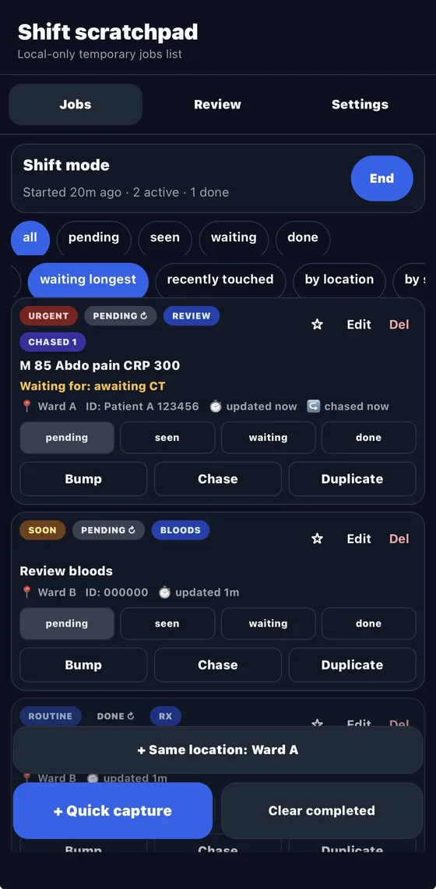
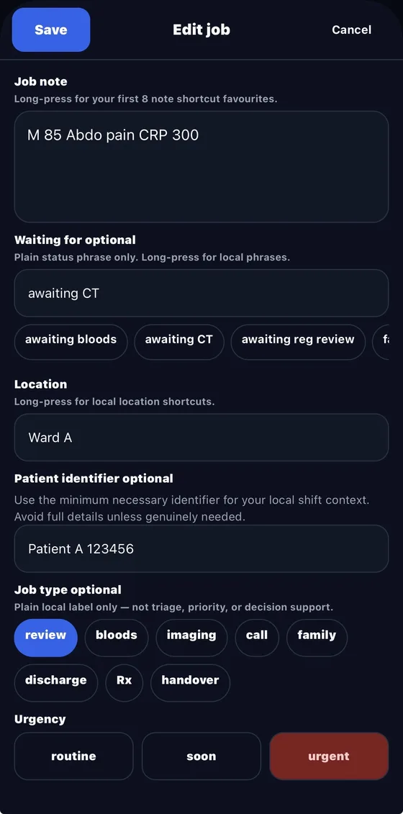

Clinical Shift Scratchpad
I made this because ward jobs kept ending up split between paper, screenshots and memory during busy shifts.
It is a mobile-first scratchpad for temporary task organisation: quick free text, optional minimum-necessary patient identifier, location, urgency, status, pins, duplication and local expiry.
It is not a medical record and not decision support.
Do not enter patient-identifiable information into this website or repository.
Runtime data should stay on the device. There is no backend, login, cloud sync, analytics, messaging, AI or EHR integration.
This is a personal prototype for temporary task organisation only. It should not be used as the source of truth for patient care.
What it does
It keeps an active list of ward jobs easier to capture and scan during a shift. Start with free text, then add structure when it is useful.
- radial menus for common note and location shortcuts;
- status, urgency, job type, pinning and bump-to-top actions;
- compact card mode for dense lists;
- local auto-expiry for jobs that should not persist indefinitely.
Screenshots
Synthetic examples. The screenshots show the current prototype shape, not a live clinical system.


Limits
It is not a referral app, EHR, messaging system, NHS-approved product, clinical safety system, regulated medical device or GDPR-assured service.
Status
Personal prototype. Field-tested by me, narrow on purpose and not production software.